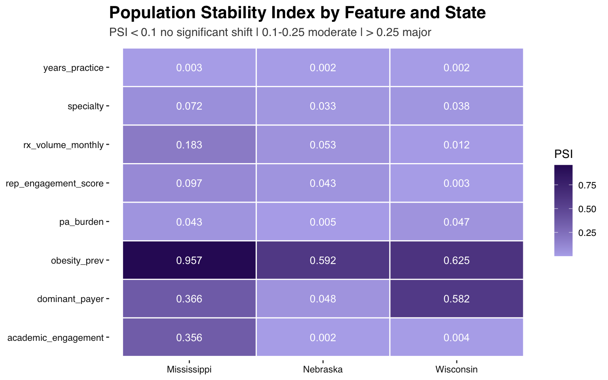
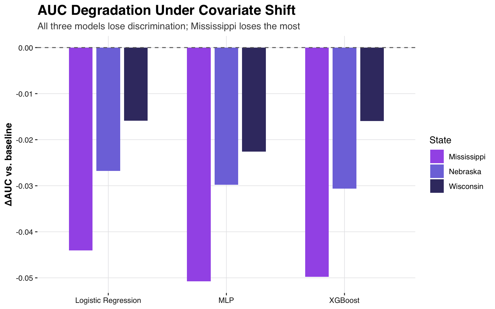
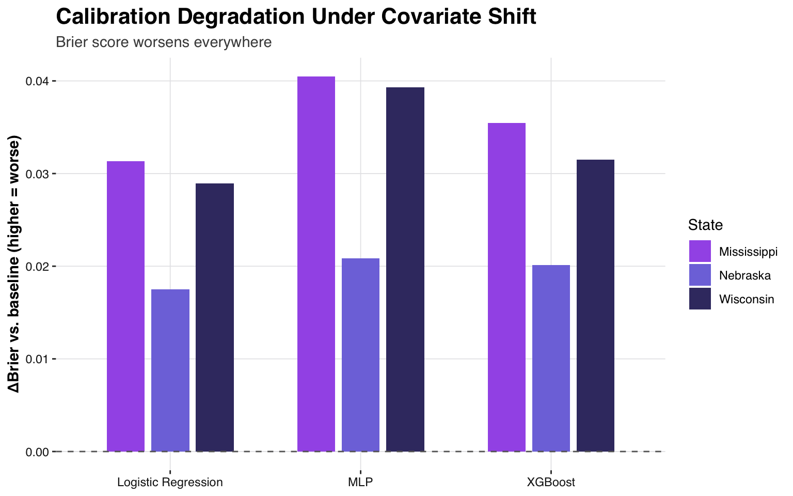
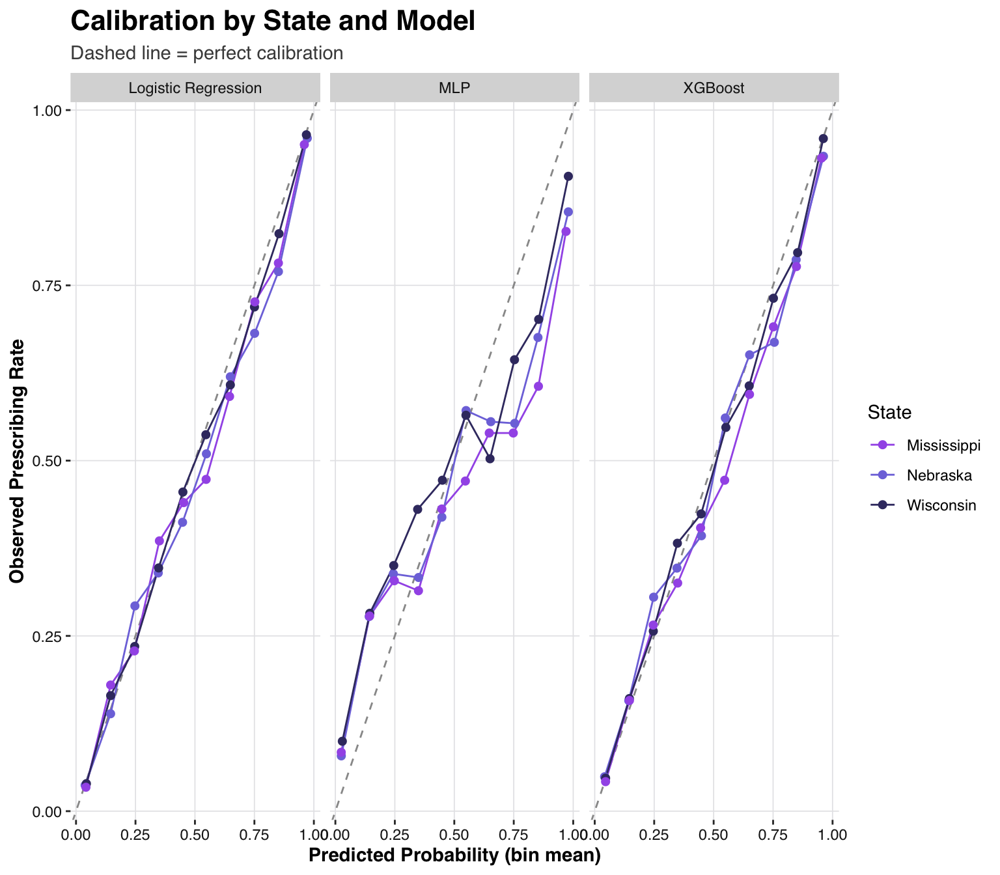
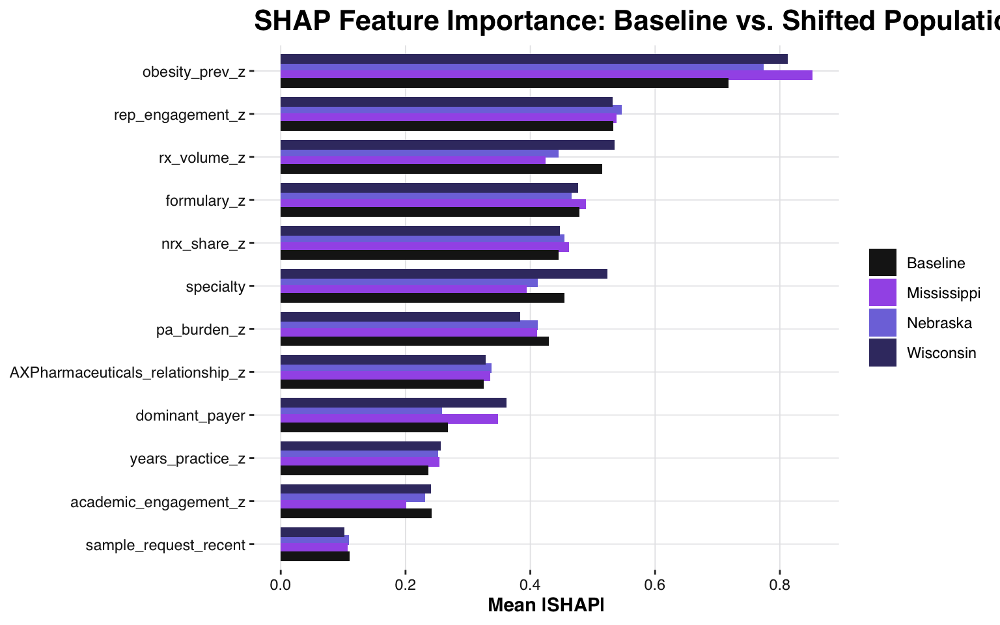
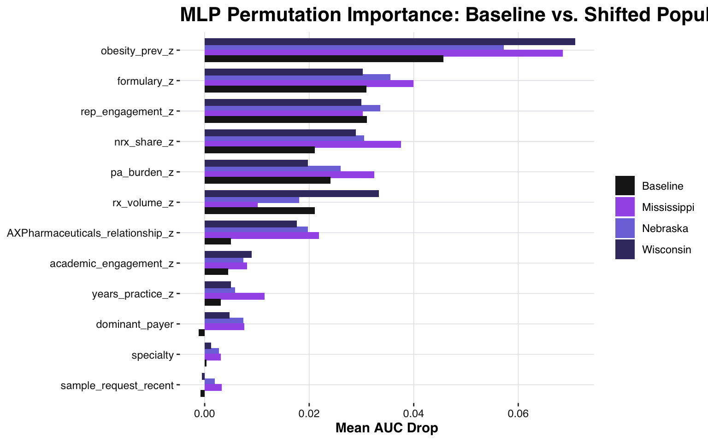

| Feature | Nebraska | Wisconsin | Mississippi |
|---|---|---|---|
| Specialty mix | PC-heavy, low specialist density | More balanced (urban cores) | PC-heavy, lowest specialist density |
| Obesity prevalence | Elevated (~35%+) | Elevated (~35%+) | Highest (~40%+) |
| Payer mix / Medicaid access | Full expansion, new work-requirement friction | Partial expansion — more commercial/marketplace | No expansion — coverage gap, heaviest OOP |
| Prior authorization burden | Moderate (Medicaid nudged up) | Moderate-high | Highest |
| Rep engagement recency | Less recent (sparse rural coverage) | Mixed (urban clusters more recent) | Least recent of the three (largest rural share) |
| Within-specialty script volume | Rural HCPs write ~75% of baseline | Rural HCPs write ~85% of baseline (mildest) | Rural HCPs write ~55% of baseline (steepest) |
| Academic engagement | No shift | No shift | Slightly lower |
Rabivy: Post-Training Evaluation — Covariate Shift Across Three States

Disclaimer: Rabivy and AX Pharmaceuticals are fictional and were created solely for the purposes of this demonstration and portfolio project.
Introduction
The original project built and evaluated three models — Logistic Regression, XGBoost, and an MLP — predicting HCP propensity to prescribe Rabivy, a fictional obesity asset, on a fully synthetic dataset of 5,000 HCPs, evaluated against a held-out golden test set.
This second project investigates how those same models perform when the underlying HCP population’s characteristics look different from what they were trained on. It takes the three original models, freezes them exactly as originally trained, and scores them against three simulated state populations (Nebraska, Wisconsin, Mississippi) whose covariate distributions are deliberately shifted to reflect realistic 2026 demographic and Medicaid-policy contrasts.
A central concern in applied machine learning is that model performance is closely tied to the specific conditions of the dataset used for development. Such shifts are common when a model moves from development into deployment, and they can take many forms, including changes in patient demographics, disease prevalence, and clinical practice patterns. This problem — variable distributions shifting in ways that undermine a model’s ability to generalize — is known as dataset shift (Subbaswamy et al., 2021). Generalization is central to deploying a model successfully, since predictions are only useful if they remain accurate on new populations not seen during training. Assessing whether a model will generalize requires evaluating its stability: whether model performance holds up when the data are perturbed in various ways (Subbaswamy & Saria, 2020).
Core design decision: covariate shift, not concept drift
The ground-truth data-generating process (DGP) - the coefficients and logic relating features to prescribing probability - is identical to the original. Only the distribution of input features changes, per state. This isolates a clean question: does the model generalize to a differently-shaped population, given that the underlying logic hasn’t changed?
This is explicitly not a concept-drift study as the DGP coefficients themselves are never adjusted. Concept drift is a related but distinct scenario where the relationship between features and outcome changes. For example, if a competitor launch or new clinical guidance meant obesity prevalence became a weaker predictor of prescribing than it used to be. That would require changing the DGP’s coefficients themselves, not just the underlying population characteristics. This project deliberately holds that relationship fixed and only shifts the feature distributions.
The Three States
Nebraska, Wisconsin, and Mississippi were chosen to maximize realistic demographic and Medicaid-policy contrast (grounded in 2026 status):
- Nebraska: Full Medicaid expansion, but work-requirement enforcement began May 2026, adding access friction. Rural/plains state, low specialist density, obesity prevalence ~35%+.
- Wisconsin: Partial Medicaid expansion only — lower-income adults rely on commercial/marketplace coverage instead of Medicaid. Mixed urban/ rural. Obesity prevalence ~35%+.
- Mississippi: No Medicaid expansion — a genuine coverage gap for low-income adults. Highest obesity prevalence in the country (~40%+). Lowest specialist density, heaviest commercial/self-pay reliance.
Only the features below are shifted per state. Everything else keeps the original repo’s distribution exactly, so any change in model performance can be attributed to a specific, named covariate.
The magnitude of each state’s specialty-mix, payer-mix, PA-burden, and rep-engagement shifts in the table above are illustrative choices consistent with real Medicaid-expansion and obesity-prevalence facts.
Within-specialty script volume follows the same logic, but is treated slightly differently. Rural/access-constrained HCPs plausibly write fewer total GLP-1 scripts than urban HCPs of the same specialty, independent of the specialty-mix effect above. Each state’s underlying urban/rural split discounts the original specialty-conditional mean volume by 75% (Nebraska), 85% (Wisconsin), or 55% (Mississippi) for rural HCPs; urban HCPs keep the original mean.
Sample Sizes and Descriptive Statistics
For every population (i.e., the original training/test set and all three simulated states) n = 5,000. The state populations are each an independent, full-scale simulated population resulting in a total of 15,000 HCPs across all three states. Sample sizes are not based on real relative market size and N was intentionally held constant to isolate the model’s ability to generalize to a differently-shaped population.
Show code
build_desc_row <- function(label, df) {
tibble(
Population = label,
N = nrow(df),
`Prescribe rate` = mean(df$prescribe_likely),
`Mean Rx volume/mo` = mean(df$rx_volume_monthly),
`Mean obesity prev.` = mean(df$obesity_prev),
`Mean PA burden` = mean(df$pa_burden),
`Mean days since contact` = mean(df$days_since_contact),
`% Primary Care` = mean(df$specialty == "Primary Care")
)
}
original_df <- readRDS("data/hcp_simulation_data.rds")
desc_table <- bind_rows(
build_desc_row("Original (training population)", original_df),
build_desc_row("Nebraska", readRDS("data/state_simulations/nebraska.rds")),
build_desc_row("Wisconsin", readRDS("data/state_simulations/wisconsin.rds")),
build_desc_row("Mississippi", readRDS("data/state_simulations/mississippi.rds"))
)
kable(desc_table, digits = 3,
caption = "Descriptive statistics: original population vs. each simulated state (all n = 5,000)") %>%
kable_styling(bootstrap_options = c("striped", "hover", "condensed"))| Population | N | Prescribe rate | Mean Rx volume/mo | Mean obesity prev. | Mean PA burden | Mean days since contact | % Primary Care |
|---|---|---|---|---|---|---|---|
| Original (training population) | 5000 | 0.281 | 12.363 | 0.282 | 0.510 | 88.804 | 0.817 |
| Nebraska | 5000 | 0.279 | 7.622 | 0.385 | 0.520 | 111.342 | 0.882 |
| Wisconsin | 5000 | 0.436 | 14.199 | 0.405 | 0.484 | 90.391 | 0.737 |
| Mississippi | 5000 | 0.299 | 5.050 | 0.420 | 0.542 | 128.234 | 0.905 |
The prescribing-rate column shows the base-rate shift referenced throughout this report: 27.9% (Nebraska), 43.6% (Wisconsin), 29.9% (Mississippi), vs. 28.1% in the original. Mean days-since-contact rises from 88.8 days (original) to 111.3 (Nebraska), 90.4 (Wisconsin, barely moved given its larger urban share), and 128.2 (Mississippi, where HCPs go the longest on average without rep contact).
Mississippi illustrates how several shifted input features compound into a single downstream number, via two distinct effects. First, a composition effect: its population is more heavily weighted toward Primary Care (90.5% vs. 81.7% in the original) and toward lower specialist density generally, and Primary Care HCPs have the lowest baseline script volume of the three specialties to begin with. Second, rural HCPs in Mississippi write only 55% of their specialty’s usual volume — the steepest of the three states’ rural discounts. Both effects push in the same direction, so Mississippi’s mean monthly Rx volume comes out lowest of the four populations (5.05 vs. 12.36 in the original).
Frozen Models
The three models (Logistic Regression, XGBoost, MLP) were rebuilt exactly per the original repo’s training code and seeds (R/00_load_frozen_models.R), and never retrained. LR and XGBoost reproduce the original report’s test AUC exactly (0.9183 and 0.912 respectively). MLP is close but not identical since TensorFlow/Keras training is not fully seed-reproducible.
“Frozen” indicates that each model’s parameters — the logistic regression coefficients, the XGBoost tree ensemble, and the MLP’s learned weights — are fixed upon completion of training and are not subsequently updated. This constraint is central to the evaluation’s validity: the objective is to assess how a model trained on one population generalizes to a different population. Any adjustment to the model on new data would undermine this comparison.
Show code
golden <- readRDS("models/golden_baseline.rds")
drift <- readRDS("results/drift_metrics.rds")
baseline_table <- tibble(
Model = c("Logistic Regression", "XGBoost", "MLP"),
AUC = c(golden$metrics$lr$auc, golden$metrics$xgb$auc, golden$metrics$mlp$auc),
Brier = c(golden$metrics$lr$brier, golden$metrics$xgb$brier, golden$metrics$mlp$brier)
)
kable(baseline_table, digits = 4, caption = "Golden-test-set baseline (original repo population)") %>%
kable_styling(bootstrap_options = c("striped", "hover", "condensed"), full_width = FALSE)| Model | AUC | Brier |
|---|---|---|
| Logistic Regression | 0.9183 | 0.0954 |
| XGBoost | 0.9118 | 0.0976 |
| MLP | 0.8980 | 0.1112 |
Population Stability Index (PSI)
Population Stability Index (PSI) is a standard metric in model-risk and credit-scoring practice for quantifying how much a population has shifted relative to a reference distribution. A value near 0 means the two distributions look essentially the same; larger values mean the new population has moved further from the reference. Industry convention treats PSI < 0.1 as no significant shift, 0.1–0.25 as a moderate shift, and > 0.25 as a major shift warranting attention.
PSI is computed per feature, per state, against the original 5,000-HCP population (i.e., not just the golden test set). years_practice was included as a sanity check and should show ~0 PSI, since it was never a shifted feature by design.
Show code
ggplot(drift$psi_table, aes(x = state, y = feature, fill = psi)) +
geom_tile(color = "white", linewidth = 0.5) +
geom_text(aes(label = round(psi, 3)), color = "white", size = 3.5) +
scale_fill_gradient(low = "#B5AFEB", high = "#311465", name = "PSI") +
labs(title = "Population Stability Index by Feature and State",
subtitle = "PSI < 0.1 no significant shift | 0.1-0.25 moderate | > 0.25 major",
x = NULL, y = NULL) +
Rabivy_theme +
theme(panel.grid.major = element_blank())
Show code
kable(drift$psi_table %>% arrange(state, desc(psi)), digits = 4,
caption = "PSI detail, feature x state") %>%
kable_styling(bootstrap_options = c("striped", "hover", "condensed"))| feature | state | psi | interpretation |
|---|---|---|---|
| obesity_prev | Mississippi | 0.9570 | major shift |
| dominant_payer | Mississippi | 0.3662 | major shift |
| academic_engagement | Mississippi | 0.3558 | major shift |
| rx_volume_monthly | Mississippi | 0.1828 | moderate shift |
| rep_engagement_score | Mississippi | 0.0972 | no significant shift |
| specialty | Mississippi | 0.0718 | no significant shift |
| pa_burden | Mississippi | 0.0426 | no significant shift |
| years_practice | Mississippi | 0.0030 | no significant shift |
| obesity_prev | Nebraska | 0.5918 | major shift |
| rx_volume_monthly | Nebraska | 0.0530 | no significant shift |
| dominant_payer | Nebraska | 0.0478 | no significant shift |
| rep_engagement_score | Nebraska | 0.0429 | no significant shift |
| specialty | Nebraska | 0.0334 | no significant shift |
| pa_burden | Nebraska | 0.0052 | no significant shift |
| years_practice | Nebraska | 0.0022 | no significant shift |
| academic_engagement | Nebraska | 0.0021 | no significant shift |
| obesity_prev | Wisconsin | 0.6251 | major shift |
| dominant_payer | Wisconsin | 0.5823 | major shift |
| pa_burden | Wisconsin | 0.0468 | no significant shift |
| specialty | Wisconsin | 0.0378 | no significant shift |
| rx_volume_monthly | Wisconsin | 0.0121 | no significant shift |
| academic_engagement | Wisconsin | 0.0043 | no significant shift |
| rep_engagement_score | Wisconsin | 0.0031 | no significant shift |
| years_practice | Wisconsin | 0.0024 | no significant shift |
years_practice lands at PSI ≈ 0 in all three states, confirming the simulation left unshifted features alone and obesity_prev shows a major shift everywhere, by design.
Per-State Scoring
Unlike the original project, it was not necessary to apply a train/test split on the state-simulated populations. A split is required only when a model is being fit to one portion of the data and evaluated on a separate, held-out portion to detect overfitting. Because the frozen models were not trained on this data — they are only scored against it — each state’s full 5,000-HCP population functions as a single, independent held-out evaluation set.
Discrimination: AUC and Gini
AUC (Area Under the ROC Curve) measures how well a model ranks HCPs who go on to prescribe above those who do not: a value of 0.5 corresponds to random guessing, and 1.0 to perfect separation. Gini (calculated as 2×AUC − 1 and expressed as a percentage) conveys the same information on a 0–100% scale. Both metrics are described as threshold-free because they evaluate a model’s ranking across every possible probability cutoff simultaneously, rather than at one fixed decision threshold such as 0.5. In other words, AUC indicates whether a randomly chosen prescriber is ranked above a randomly chosen non-prescriber, not whether any individual HCP is classified correctly.
Show code
degradation_shade <- col_numeric(palette = c("#FFFFFF", "#B5453B"),
domain = range(abs(drift$performance_table$auc_delta)))
auc_gini_data <- drift$performance_table %>%
select(state, model, auc_baseline, auc_state, auc_delta, gini_baseline, gini_state) %>%
mutate(auc_delta = cell_spec(round(auc_delta, 4), format = "html",
background = degradation_shade(abs(auc_delta))))
kable(
auc_gini_data,
format = "html", digits = 4, escape = FALSE,
col.names = c("State", "Model", "AUC (baseline)", "AUC (state)", "ΔAUC", "Gini (baseline)", "Gini (state)"),
caption = "Table 1: Discrimination (AUC, Gini) vs. the golden-test-set baseline"
) %>%
kable_styling(bootstrap_options = c("striped", "hover", "condensed"))| State | Model | AUC (baseline) | AUC (state) | ΔAUC | Gini (baseline) | Gini (state) |
|---|---|---|---|---|---|---|
| Nebraska | Logistic Regression | 0.9183 | 0.8915 | -0.0268 | 83.6598 | 78.2977 |
| Nebraska | XGBoost | 0.9118 | 0.8812 | -0.0306 | 82.3583 | 76.2324 |
| Nebraska | MLP | 0.8980 | 0.8682 | -0.0298 | 79.5992 | 73.6476 |
| Wisconsin | Logistic Regression | 0.9183 | 0.9025 | -0.0158 | 83.6598 | 80.4910 |
| Wisconsin | XGBoost | 0.9118 | 0.8959 | -0.0159 | 82.3583 | 79.1724 |
| Wisconsin | MLP | 0.8980 | 0.8754 | -0.0226 | 79.5992 | 75.0766 |
| Mississippi | Logistic Regression | 0.9183 | 0.8742 | -0.0441 | 83.6598 | 74.8469 |
| Mississippi | XGBoost | 0.9118 | 0.8620 | -0.0497 | 82.3583 | 72.4088 |
| Mississippi | MLP | 0.8980 | 0.8472 | -0.0507 | 79.5992 | 69.4498 |
Show code
ggplot(drift$performance_table, aes(x = model, y = auc_delta, fill = state)) +
geom_col(position = position_dodge(width = 0.7), width = 0.6) +
geom_hline(yintercept = 0, linetype = "dashed", color = "grey40") +
scale_fill_manual(values = state_palette) +
labs(title = "AUC Degradation Under Covariate Shift", subtitle = "All three models lose discrimination; Mississippi loses the most",
x = NULL, y = "ΔAUC vs. baseline", fill = "State") +
Rabivy_theme
The dashed horizontal line represents the golden-test-set baseline. Bars extending below the line indicate a lower AUC in that state relative to the baseline.
Every model loses discrimination in every state, most substantially in Mississippi and least in Wisconsin. This ordering does not simply track the overall magnitude of population shift. Mississippi combines moderate-to-major PSI shifts (see above) across four features simultaneously — obesity prevalence, dominant payer, academic engagement, and script volume — so its population diverges from the training population on several fronts at once.
The comparison between Nebraska and Wisconsin is more subtle. Wisconsin’s PSI shifts on obesity prevalence and dominant payer are larger in absolute terms than Nebraska’s, yet Wisconsin’s AUC holds up better. This is because AUC is determined by whether the model can still rank HCPs correctly relative to one another, not by how far a feature’s marginal distribution has moved. A large PSI value indicates that a population has shifted but it does not indicate whether that shift moves cases into a region where true prescribers and true non-prescribers become easier or harder to distinguish.
Wisconsin’s shift moves a substantial share of HCPs toward Commercial-dominant payer status. Because this reflects the same relationship already present at training time, it likely preserves the separability of high- and low-propensity HCPs even as the population’s average level shifts considerably — the models are not being asked to generalize to a genuinely new pattern, only to a population where an already-familiar pattern is more prevalent. Nebraska’s shift, while smaller in PSI terms, does not have this same reinforcing structure, so a larger share of its population likely falls into a harder-to-rank middle range.
Balanced Accuracy, Sensitivity, and Specificity
All three are computed at the original 0.5 probability threshold.
Sensitivity (Recall): The proportion of actual prescribers that the model correctly identifies (true positive rate).
Specificity: The proportion of actual non-prescribers that the model correctly identifies (true negative rate).
Balanced Accuracy: The average of sensitivity and specificity — a fairer summary than raw accuracy when the two classes aren’t the same size.
The confusion matrices below show the raw counts behind these rates.
Show code
worse_shade <- function(state_val, baseline_val) {
ifelse(state_val < baseline_val, "#F4CCCC", "#D9EAD3")
}
sens_spec_data <- drift$performance_table %>%
select(state, model, balanced_accuracy_baseline, balanced_accuracy_state,
sensitivity_baseline, sensitivity_state, specificity_baseline, specificity_state) %>%
mutate(
balanced_accuracy_state = cell_spec(round(balanced_accuracy_state, 4), format = "html",
background = worse_shade(balanced_accuracy_state, balanced_accuracy_baseline)),
sensitivity_state = cell_spec(round(sensitivity_state, 4), format = "html",
background = worse_shade(sensitivity_state, sensitivity_baseline)),
specificity_state = cell_spec(round(specificity_state, 4), format = "html",
background = worse_shade(specificity_state, specificity_baseline))
)
kable(
sens_spec_data,
format = "html", digits = 4, escape = FALSE,
col.names = c("State", "Model", "Bal. Acc. (baseline)", "Bal. Acc. (state)",
"Sensitivity (baseline)", "Sensitivity (state)", "Specificity (baseline)", "Specificity (state)"),
caption = "Table 2: Balanced accuracy, sensitivity, and specificity at the 0.5 threshold"
) %>%
kable_styling(bootstrap_options = c("striped", "hover", "condensed"))| State | Model | Bal. Acc. (baseline) | Bal. Acc. (state) | Sensitivity (baseline) | Sensitivity (state) | Specificity (baseline) | Specificity (state) |
|---|---|---|---|---|---|---|---|
| Nebraska | Logistic Regression | 0.8175 | 0.7782 | 0.6966 | 0.6354 | 0.9384 | 0.9209 |
| Nebraska | XGBoost | 0.8079 | 0.7677 | 0.6820 | 0.6067 | 0.9338 | 0.9287 |
| Nebraska | MLP | 0.7944 | 0.7623 | 0.6650 | 0.6117 | 0.9237 | 0.9129 |
| Wisconsin | Logistic Regression | 0.8175 | 0.8154 | 0.6966 | 0.7691 | 0.9384 | 0.8618 |
| Wisconsin | XGBoost | 0.8079 | 0.8091 | 0.6820 | 0.7622 | 0.9338 | 0.8561 |
| Wisconsin | MLP | 0.7944 | 0.7843 | 0.6650 | 0.7245 | 0.9237 | 0.8441 |
| Mississippi | Logistic Regression | 0.8175 | 0.7547 | 0.6966 | 0.6067 | 0.9384 | 0.9026 |
| Mississippi | XGBoost | 0.8079 | 0.7522 | 0.6820 | 0.6166 | 0.9338 | 0.8878 |
| Mississippi | MLP | 0.7944 | 0.7439 | 0.6650 | 0.6166 | 0.9237 | 0.8713 |
Show code
kable(drift$confusion_summary, caption = "Confusion matrices at the original 0.5 decision threshold") %>%
kable_styling(bootstrap_options = c("striped", "hover", "condensed"))| state | model | true_neg | false_neg | false_pos | true_pos |
|---|---|---|---|---|---|
| Nebraska | Logistic Regression | 3319 | 509 | 285 | 887 |
| Nebraska | XGBoost | 3347 | 549 | 257 | 847 |
| Nebraska | MLP | 3290 | 542 | 314 | 854 |
| Wisconsin | Logistic Regression | 2432 | 503 | 390 | 1675 |
| Wisconsin | XGBoost | 2416 | 518 | 406 | 1660 |
| Wisconsin | MLP | 2382 | 600 | 440 | 1578 |
| Mississippi | Logistic Regression | 3160 | 586 | 341 | 904 |
| Mississippi | XGBoost | 3110 | 574 | 393 | 923 |
| Mississippi | MLP | 3052 | 574 | 451 | 923 |
The original 0.5 threshold was calibrated against a 28.1% base rate. Wisconsin’s true rate (43.6%) is high enough that this threshold likely under-flags true positives relative to what a re-calibrated threshold would catch.
Precision and Calibration (Brier Score)
Precision refers to the proportion of HCPs predicted as likely to prescribe who actually were (Positive Predictive Value). Brier score measures how close predicted probabilities are to the actual outcomes on average, with lower values indicating better calibration. Unlike AUC/Gini, it’s sensitive to the absolute probability level, not just ranking.
Show code
brier_degradation_shade <- col_numeric(palette = c("#FFFFFF", "#B5453B"),
domain = range(drift$performance_table$brier_delta))
precision_brier_data <- drift$performance_table %>%
select(state, model, precision_baseline, precision_state, brier_baseline, brier_state, brier_delta) %>%
mutate(
precision_state = cell_spec(round(precision_state, 4), format = "html",
background = worse_shade(precision_state, precision_baseline)),
brier_delta = cell_spec(round(brier_delta, 4), format = "html",
background = brier_degradation_shade(brier_delta))
)
kable(
precision_brier_data,
format = "html", digits = 4, escape = FALSE,
col.names = c("State", "Model", "Precision (baseline)", "Precision (state)",
"Brier (baseline)", "Brier (state)", "ΔBrier"),
caption = "Table 3: Precision and Brier score vs. the golden-test-set baseline"
) %>%
kable_styling(bootstrap_options = c("striped", "hover", "condensed"))| State | Model | Precision (baseline) | Precision (state) | Brier (baseline) | Brier (state) | ΔBrier |
|---|---|---|---|---|---|---|
| Nebraska | Logistic Regression | 0.8107 | 0.7568 | 0.0954 | 0.1129 | 0.0175 |
| Nebraska | XGBoost | 0.7960 | 0.7672 | 0.0976 | 0.1178 | 0.0201 |
| Nebraska | MLP | 0.7675 | 0.7312 | 0.1112 | 0.1320 | 0.0208 |
| Wisconsin | Logistic Regression | 0.8107 | 0.8111 | 0.0954 | 0.1243 | 0.0289 |
| Wisconsin | XGBoost | 0.7960 | 0.8035 | 0.0976 | 0.1291 | 0.0315 |
| Wisconsin | MLP | 0.7675 | 0.782 | 0.1112 | 0.1505 | 0.0393 |
| Mississippi | Logistic Regression | 0.8107 | 0.7261 | 0.0954 | 0.1267 | 0.0313 |
| Mississippi | XGBoost | 0.7960 | 0.7014 | 0.0976 | 0.1331 | 0.0355 |
| Mississippi | MLP | 0.7675 | 0.6718 | 0.1112 | 0.1517 | 0.0405 |
Show code
ggplot(drift$performance_table, aes(x = model, y = brier_delta, fill = state)) +
geom_col(position = position_dodge(width = 0.7), width = 0.6) +
geom_hline(yintercept = 0, linetype = "dashed", color = "grey40") +
scale_fill_manual(values = state_palette) +
labs(title = "Calibration Degradation Under Covariate Shift", subtitle = "Brier score worsens everywhere",
x = NULL, y = "ΔBrier vs. baseline (higher = worse)", fill = "State") +
Rabivy_theme
Every model’s Brier score worsens in every state, because the shifted payer, access, and specialty mix moves the underlying base rate of “likely to prescribe” (27.9% Nebraska, 43.6% Wisconsin, 29.9% Mississippi, versus 28.1% in the original). This shift in base rate is the mechanism responsible for the deterioration in Brier score. A model’s predicted probabilities are anchored to the base rate observed in its training population. When a new population’s true rate differs meaningfully from this baseline, predictions anchored to the original 28.1% rate will systematically fail to reflect the new level. This represents a calibration failure rather than a discrimination failure: the model can still correctly rank one HCP as more likely to prescribe than another (reflected in AUC and Gini), while misestimating the absolute probability level (as reflected in Brier score and the calibration plot below).
Show code
ggplot(drift$calibration_table, aes(x = pred_rate, y = obs_rate, color = state)) +
geom_abline(intercept = 0, slope = 1, linetype = "dashed", color = "grey60") +
geom_line() +
geom_point(size = 1.8) +
scale_color_manual(values = state_palette) +
facet_wrap(~ model) +
labs(title = "Calibration by State and Model", subtitle = "Dashed line = perfect calibration",
x = "Predicted Probability (bin mean)", y = "Observed Prescribing Rate", color = "State") +
Rabivy_theme
The calibration plot compares the model’s predicted probabilities (x-axis) with the actual observed prescribing rates (y-axis) binned by predicted probability. The dashed grey line represents perfect calibration (Predicted = Observed). Any deviation from this line shows where the model is over- or under-confident. Mississippi shows the clearest calibration gap of the three states, consistent with showing the largest Brier score increase.
Feature Importance Stability
XGBoost (SHAP): mean absolute SHAP contribution per feature, computed on each state’s data through the frozen model, ranked and compared to the golden-test-set ranking via Spearman correlation.
Show code
kable(drift$shap_rank_stability, digits = 4,
caption = "Spearman rank correlation of SHAP feature importance vs. golden-test-set baseline") %>%
kable_styling(bootstrap_options = c("striped", "hover", "condensed"), full_width = FALSE)| state | spearman_rho |
|---|---|
| Nebraska | 0.9441 |
| Wisconsin | 0.9720 |
| Mississippi | 0.9371 |
Show code
ggplot(drift$shap_importance_table, aes(x = reorder(feature, mean_abs_shap), y = mean_abs_shap, fill = state)) +
geom_col(position = position_dodge(width = 0.75)) +
coord_flip() +
scale_fill_manual(values = c(state_palette, Baseline = "#1A1A1A")) +
labs(title = "SHAP Feature Importance: Baseline vs. Shifted Populations",
x = NULL, y = "Mean |SHAP|", fill = NULL) +
Rabivy_theme
Rank stability is high (Spearman ρ 0.94–0.97) across all three states: XGBoost’s understanding of what matters — obesity prevalence, formulary access, rep engagement, PA burden — holds up well under covariate shift even as raw discrimination and calibration degrade. This is a reassuring signal for commercial deployment: the model isn’t picking up spurious drivers in the new populations, it’s just less well-calibrated to them.
MLP (Permutation Importance): unlike SHAP, the MLP has no built-in feature-attribution method, so importance is instead measured by permutation — shuffling one feature at a time and recording how much AUC drops, following the same approach as the original project.
Show code
kable(drift$mlp_rank_stability, digits = 4,
caption = "Spearman rank correlation of MLP permutation importance vs. golden-test-set baseline") %>%
kable_styling(bootstrap_options = c("striped", "hover", "condensed"), full_width = FALSE)| state | spearman_rho |
|---|---|
| Nebraska | 0.9371 |
| Wisconsin | 0.8951 |
| Mississippi | 0.8881 |
Show code
ggplot(drift$mlp_importance_table, aes(x = reorder(feature, mean_auc_drop), y = mean_auc_drop, fill = state)) +
geom_col(position = position_dodge(width = 0.75)) +
coord_flip() +
scale_fill_manual(values = c(state_palette, Baseline = "#1A1A1A")) +
labs(title = "MLP Permutation Importance: Baseline vs. Shifted Populations",
x = NULL, y = "Mean AUC Drop", fill = NULL) +
Rabivy_theme
Rank stability is somewhat lower than XGBoost’s but still high (Spearman ρ 0.89–0.94): The MLP’s ranking of which features drive its predictions holds up reasonably well under covariate shift, with a bit more reshuffling than XGBoost shows, most noticeably in Wisconsin and Mississippi.
Logistic Regression: Logistic regression’s coefficients are fixed at training time and never recomputed, so there is no per-state ranking to compare.
Does the Model Hold? — Verdict Per State
Nebraska — holds up reasonably well. Modest AUC loss (−0.027 to −0.031 across models), the smallest base-rate shift, and PSI confirms the payer-mix change didn’t move the needle much at the dominant_payer level. The main risk is calibration drift from less recent rep engagement and reduced rural script volume, not discrimination.
Wisconsin — discrimination holds, calibration doesn’t. Smallest AUC loss of the three states, but the largest base-rate shift (43.6% vs. 28.1%) means the original 0.5 threshold and predicted probabilities are meaningfully miscalibrated here. A practical deployment would need threshold/probability recalibration, not a new model.
Mississippi — the most exposed. Largest AUC loss and largest Brier increase across all three models, driven by the compounding effect of a major obesity-prevalence shift, a major payer-mix shift, the steepest rural script-volume discount, and a coverage gap. Nine of 5,000 HCPs have “OOP” (Out Of Pocket) as dominant_payer, which never occurred anywhere in the original training population, meaning the frozen LR model has no coefficient for it and cannot score them at all.
Across all three states, both XGBoost’s SHAP-based feature ranking (ρ > 0.93) and the MLP’s permutation-importance ranking (ρ > 0.89) remain highly stable, indicating that the models are not learning spurious relationships that break down under shift; rather, they remain correctly specified but become miscalibrated as the population diverges from the training distribution, underscoring the importance of routine drift monitoring.
Conclusion
This evaluation set out to test whether the original Rabivy propensity models remain reliable when the underlying HCP population differs from the one they were trained on. Across Nebraska, Wisconsin, and Mississippi, discrimination degrades modestly but consistently, calibration degrades more substantially wherever the base rate shifts furthest from the original, and the models’ understanding of which features matter, as measured by SHAP rank stability, holds up well throughout.
This pattern suggests that the models are not learning spurious associations that collapse under distributional change but are sensitive to how far a new population’s feature distributions and base rate diverge from the population they were trained on. This sensitivity is most visible in Mississippi, where a coverage-gap population produces both the largest overall performance loss and a structural blind spot — a small number of HCPs whose dominant payer category never appeared in the original training population, and for whom the frozen logistic regression model has no coefficient at all.
Addressing dataset shift at the modeling stage is only one part of building a reliable machine learning system for deployment. Ongoing monitoring and maintenance are two additional, equally critical components (Subbaswamy & Saria, 2020). In practice, this implies that a Rabivy propensity model deployed across genuinely different state populations would require routine tracking of PSI and calibration metrics in order to detect when a deployed population has drifted far enough from its training conditions to warrant retraining.
References
Huskamp, H. A., Epstein, A. M., & Blumenthal, D. (2013). New prescription drug adoption among physicians. American Journal of Managed Care.
Rainio, O., Teuho, J., & Klén, R. (2024). Evaluation metrics and statistical tests for machine learning. Scientific Reports, 14, 6086.
Subbaswamy, A., Adams, R., & Saria, S. (2021, March). Evaluating model robustness and stability to dataset shift. In International conference on artificial intelligence and statistics (pp. 2611-2619). PMLR.
Subbaswamy, A., & Saria, S. (2020). From development to deployment: dataset shift, causality, and shift-stable models in health AI. Biostatistics, 21(2), 345-352.